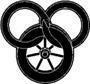

Avcılar ve Nöbetçiler
Hikmet yanından ayrıldıktan sonra, Rand salona gitti. Nynaeve'in söylediklerini ve neden olabileceği sorunları unutabilmek için insanların kahkahalarını duyması gerekiyordu.
Oda gerçekten de kalabalıktı, ama her sandalyenin ve sıranın dolu olmasına, insanların duvarların dibinde dizilmiş durmasına rağmen kimse gülmüyordu. Thom uzak duvarın dibindeki bir masaya çıkmış, jestleri tüm odayı doldurarak, yine gösteri yapıyordu. Yine Büyük Boru Avı'nı anlatıyordu, ama elbette kimse şikayet etmiyordu. Anlatılacak o kadar Avcı, her Avcı için anlatılacak o kadar çok hikâye vardı ki, hiçbir öykü birbirinin aynı olmuyordu. Tüm hikâyenin anlatılması en az bir hafta alırdı. Âşığın sesi ile rekabet eden yegane sesler arpın sesi ile şöminedeki ateşin çıtırtıları idi.
"... Avcılar dünyanın sekiz köşesine at sürdüler, gökyüzünün sekiz desteğine, zamanın rüzgârlarının estiği, kaderin güçlüleri ve güçsüzleri ensesinden yakaladığı yere. Artık, Avcıların en büyüğü Talmourlu Rogosh idi, Rogosh Kartalgöz, Yüksek Kral'ın sarayında ünlenen, Shayol Ghul'un yamaçlarında korkulan..." Avcıların hepsi büyük kahramanlardı.
Rand iki arkadaşını buldu ve Perrin'in sıranın ucunda açtığı yere sıkıştı. Odaya süzülen mutfak kokuları açlığını hatırlattı, ama önlerinde yiyecek olan insanlar bile yemeye pek az zaman ayırıyordu. Hizmetkarlar transa geçmiş gibi durmuş, önlüklerini kavrayarak Aşığa bakıyordu ve kimse buna aldırış ediyor gibi görünmüyordu. Yemekler ne kadar güzel olursa olsun, dinlemek yemekten daha güzeldi
"... doğduğu günden bu yana Karanlık Varlık Blaes'i kendinin saymıştı, ama kadın onunla aynı fikirde değildi Matuchinli Blaes, Karanlıkdostu değildi! Dişbudak kadar sağlam, söğüt dalı kadar kıvrak, bir gül kadar güzeldi. Altın saçlı Blaes. Teslim olmadan önce ölmeye hazırdı. Ama heyhat! Şehrin kulelerinde, pirinç borular cesurca öttü. Teşrifatçıları, sarayına bir kahramanın geldiğini bildirdi. Davullar gürledi, ziller şarkı söyledi! Rogosh Kartalgöz saygılarını sunmaya gelmişti..."
"Rogosh Kartalgöz'ün Pazarlığı" dolanarak sonuna vardı, ama Thom bir an durup bir kupa bira ile boğazını ıslattıktan sonra "Lian'ın Direnişi'ne geçti. Sonra "Ajeth Loriel'in Düşüşü" ve "Gaidal Cain'in Kılıcı" ve "Albhainli Buad'ın Son At Binişi". Gece ilerledikçe aralar uzadı ve Thom arpını flütü ile değiştirince, herkes o gece için hikâyelerin sona erdiğini anladı. İki adam, bir davul ve bir santur ile ona katıldılar, ama Thom masanın tepesindeyken, onlar yanında oturdular.
Emond Meydanı'ndan gelen üç genç adam "Söğüdü Sallayan Rüzgâr" ın ilk notaları ile el çırpmaya başladılar ve yalnız değillerdi. İki Nehir'de çok sevilen şarkının Baerlon'da da popüler olduğu açıktı. Orada burada birkaç kişi şarkıyı söylemeye başladı ve susturulacak kadar çatlak sesli değillerdi.
“Aşkım gitti uzaklara,
söğüdü sallayan rüzgârla,
ve tüm ülke sallandı,
söğüdü sallayan rüzgârla.
Ama o hep kalbimde,
ve en aziz anılarımda,
ve onun gücü ruhumu sağlamlaştırır,
sevgisi yüreğimi ısıtırken,
şarkı söylediğimiz yerde bekleyeceğim,
soğuk rüzgâr söğüdü sallarken.”
İkinci şarkı o kadar hüzünlü değildi. Aslında, "Yalnızca Bir Kova Su" her zamankinden daha neşeli geldi ve Âşığın niyeti de bu gibiydi. İnsanlar ortadaki masaları çektiler, dans edecek yer açtılar ve öyle bir dans başladı ki, ayak sesleri ile duvarlar sarsıldı. İlk dans, dansçılar karınlarını tuta tuta kahkahalar atarken sona erdi ve yeni dansçılar onların yerlerini aldı.
Thom "Rüzgârda Vahşi Kazlar"ın ilk notalarını çaldı, sonra dans için herkesin yerini almasını bekledi.
"Sanırım ben de birkaç adım dans edeceğim," dedi Rand, ayağa kalkarak. Perrin tam arkasından fırladı. Mat en son ayağa kalktı, bu yüzden kendini pelerinlere, Rand'ın kılıcına ve Perrin'in baltasına göz kulak olma işi ile baş başa kalmış buldu.
"Unutmayın, ben de bir tur atacağım," diye seslendi arkalarından.
Dansçılar birbirlerine bakacak şekilde, kadınlar bir yanda, erkekler bir yanda, iki sıra oluşturdular. İlk önce davul, sonra santur tempo tuttu ve tüm dansçılar aynı anda dizlerini bükmeye başladı. Rand'ın karşısındaki kız ve kızın siyah örgüleri ona köyünü düşündürdü. Kız ona utangaç utangaç gülümsedi, sonra hiç de utangaç olmayan bir şekilde göz kırptı. Thom'un flütü ezgiye başladı ve Rand ilerleyip siyah saçlı kızla karşılaştı; o kızı döndürüp sıradaki bir sonraki adama iletirken, kız başını arkaya eğip bir kahkaha attı.
Rand, bir sonraki eşi ile, önlüğü çılgınca sallanan hizmetkâr kadınlardan biri ile dans ederken odadaki herkesin kahkahalar attığını düşündü. Gördüğü tek gülümsemeyen yüz, şöminelerden birinin yanında büzülmüş bir adama aitti ve adamın bir şakağından çenesine, çapraz bir yara izi burnunu yamultuyor, ağzının kenarını aşağı çekiyordu. Adam Rand'ın bakışlarına karşılık verdi ve yüzünü buruşturdu. Rand utanç içinde bakışlarını kaçırdı. Belki adam o yara izi ile gülümseyemiyordu.
Bir sonraki eşini dönerken yakaladı ve bir sonraki adama geçirmeden önce tam bir daire çevirdi. Müzik hız kazanırken üç kadınla daha dans etti, sonra yine baştaki siyah saçlı kızla eşleşti ve sıraları tamamen değiştiren hızlı bir çember çizdiler. Kız hâlâ kahkahalar atıyordu ve ona yine göz kırptı.
Yara izli adam kaşlarını çatmış, onu izliyordu. Rand adımlarını şaşırdı, yanakları yanmaya başladı. Adamı utandırmak istememişti; gözlerini dikip baktığının farkında bile değildi. Dönüp bir sonraki eşini gördü ve adamı tamamen unuttu. Dans ettiği bir sonraki kadın,
O Nynaeve idi.
Rand'ın ayağı takıldı, neredeyse sendeleyip genç kadının ayaklarına basacaktı. Kadın zerafetle beceriksizliğini karşıladı ve gülümsedi.
"Daha iyi bir dansçı olduğunu sanırdım," diye kahkaha attı, eş değiştirirlerken.
Rand eş değiştirmeden önce kendini toplamak için bir an bulabildi ve sonra kendini Moiraine ile dans ederken buldu. Hikmet'le eşleşmişken şaşırsa da, bu, Aes Sedai ile dans ederken hissettiklerinin yanında hiçbir şeydi. Kadın, elbisesi çevresinde dönerek kaydı; Rand iki kez düşecek gibi oldu. Kadın ona anlayışla gülümsedi ve bu, yardımcı olmak yerine, durumu daha da kötüleştirdi. Sıradaki bir sonraki eşine gitmek, bu Egwene bile olsa, çok daha iyiydi.
Rand kendini biraz topladı. Hem, Egwene ile yıllardır dans ediyordu zaten. Kızın saçları hâlâ açıktı, ama kırmızı bir kurdele ile arkada toplamıştı. Muhtemelen Moiraine'i mi, Nynaeve'i mi memnun edeceğine karar veremedi, diye düşündü Rand ekşi ekşi. Kızın dudakları aralanmıştı, bir şey söyleyecek gibi görünüyordu, ama konuşmadı ve Rand da ilk konuşan olmak istemedi. Özel yemek odasındaki girişimini o şekilde kestikten sonra değil. Birbirlerine ciddi ciddi baktılar ve tek söz etmeden dans ettiler.
Rand, dans bitince sırasına dönmekten memnun oldu. O otururken bir başka dans başladı. Mat katılmak için seyirtti ve o giderken Perrin sıraya doğru kaydı.
"Onu gördün mü?" diye başladı Perrin, daha oturmadan. "Gördün mü?"
"Hangisini?" diye sordu Rand. "Hikmet mi, Alys Hanım mı? İkisiyle de dans ettim."
"A... Alys Hanım da mı?" diye bağırdı Perrin. "Ben Nynaeve ile dans ettim. Dans edebildiğini bilmiyordum bile. Köydeki danslara hiç katılmaz."
"Acaba," diye mırıldandı Rand, "Hikmet'in dans etmesine Kadın Kurulu ne der? Belki bu yüzdendir."
Sonra, müzik, el çırpmalar ve şarkılar konuşulmayacak kadar yükseldi. Rand ve Perrin, dans edenler ortada dönerken el çırpmaya başladı. Rand defalarca yara izli adamın kendisini izlemekte olduğunu gördü. Adamın, öyle bir yarası varken, alıngan olması doğaldı, ama Rand her şeyi daha da kötüleştirmemek için ne yapabileceğini bilemiyordu. Dikkatini müziğe verdi ve adama bakmaktan kaçındı.
Dans ve müzik geç saatlere kadar devam etti. Hizmetkarlar sonunda görevlerini hatırladılar; Rand sıcak yahnisine ve ekmeğine aç kurtlar gibi saldırdı. Herkes oturduğu ya da ayakta olduğu yerde yedi. Rand üç dansa daha katıldı ve kendini Nynaeve ve Moiraine ile dans eder bulunca, adımlarına daha fazla hakim oldu. Bu sefer ikisi de dans etmesini övdüler ve bu da Rand'ın kekelemesine neden oldu. Egwene ile de yine dans etti; kız koyu renk gözleri ile ona baktı ve hep konuşacakmış gibi göründü, ama tek söz söylemedi. Rand da onun gibi sessiz kaldı, ama sıraya döndüğünde Mat ne derse desin, ona kaşlarını çatarak bakmadığından emindi.
Geceyarısına doğru Moiraine ayrıldı. Egwene bakışlarını sıkıntıyla Aes Sedai'den Nynaeve'e kaydırdıktan sonra arkasından seyirtti. Hikmet onları anlaşılmaz bakışlarla izliyordu, sonra bir dansa daha katılıp, Aes Sedai'ye karşı puan kazanmış gibi görünerek gitti.
Kısa süre sonra Thom, kalmasını isteyenlerle iyi huylulukla tartışarak flütünü çantasına kaldırdı. Lan gelip Rand ve diğerlerini toparladı.
"Erken kalkacağız," dedi Muhafız, gürültünün üzerinden sesini duyurmak için eğilerek, "ve olabildiğince iyi dinlenmemiz gerek."
"Bana bakıp duran bir adam var," dedi Mat. "Yüzünde yara izi olan bir adam. Sence bir... sence bizi uyardığın o dostlardan biri olabilir mi?"
"Şunun gibi bir yara izi mi?" dedi Rand, parmağıyla yüzüne burnunun üzerinden geçip ağzının köşesinde biten bir çizgi çizerek. "Bana da baktı." Odaya bakındı. İnsanlar dışarı çıkıyordu, ama çoğu hâlâ Thom'un çevresinde toplanmıştı. "Şimdi yok."
"Adamı gördüm," dedi Lan. "Fitch Efendi'ye göre Beyazpelerinlerin casusu imiş. Onun için endişelenmemize gerek yok." Belki yoktu, ama Rand Muhafız'ı rahatsız eden bir şey olduğunu görebiliyordu
Rand, yüzünde bir şey sakladığı zaman beliren katı bir ifade olan adama baktı. Bir Beyazpelerin casusu. Bornbald bizi ele geçirmeyi bu kadar çok istiyor olabilir mi? "Erken mi ayrılacağız?" dedi. "Çok mu erken?" Belki bir şey olmadan giderlerdi.
"Sabahın ilk ışıkları ile," diye yanıt verdi Muhafız.
Salondan çıkarlarken, Mat alçak sesle şarkılar söylüyor, Perrin arada bir durup öğrendiği yeni bir figürü deniyordu. Thom neşeyle onlara katıldı. Merdivenlere yönelirlerken Lan'in yüzü ifadesizdi.
"Nynaeve nerede uyuyor?" diye sordu Mat. "Fitch Efendi son odaları bizim aldığımızı söylemişti."
"Alys Hanım ile kızın odasına bir yatak daha koydular," dedi Thom kuru kum.
Perrin dişlerinin arasından ıslık çaldı ve Mat mırıldandı, "Kan ve küller! Caemlyn'deki bütün altınları da verseler, Egwene'in yerinde olmak istemezdim!"
Rand bir kez daha Mat'in herhangi bir şey hakkında iki dakikadan fazla ciddi düşünebilmesini diledi. O sırada kendileri de pek iyi bir durumda değillerdi. "Ben gidip biraz süt alacağım," dedi. Belki bu uyumasına yardım ederdi. Belki bu gece rüya görmem.
Lan ona keskin gözlerle baktı. "Bu gece yolunda gitmeyen bir şey var. Fazla uzaklaşma. Ve unutma, sen eyerinde oturmayı becerebilsen de, seni bağlamak zorunda kalsak da, gideceğiz."
Muhafız merdiveni tırmanmaya başladı; diğerleri onu takip etti. Neşeleri yok olmuştu. Rand koridorda yalnız duruyordu. Çevresinde onca kişi varken geçirdiği geceden sonra, kendini gerçekten de yalnız hissediyordu.
Mutfağa seyirtti. Bulaşıkçı kadın hâlâ görev başındaydı. Kadın büyük, taş bir çömlekten bir kupa süt doldurdu.
Rand sütünü içerek mutfaktan çıktığında, donuk siyahlara bürünmüş bir şekil koridorun karşı ucundan ona doğru gelmeye başladı. Solgun ellerini kaldırıp, yüzünü gizleyen başlığı arkaya attı. Şekil ilerlerken pelerin kıpırdamadan asılı duruyordu ve yüzü... Bir adamın yüzüydü, ama bir kayanın altındaki sümüklüböcek gibi hamur beyazıydı ve gözleri yoktu. Yağlı, siyah saçlarından tombul yanaklarına, bir yumurta kabuğu gibi pürüzsüzdü. Rand boğulacak gibi oldu, ağzındaki sütü püskürttü.
"Sen onlardan birisin, çocuk," dedi Soluk, sesi kemiğe sürtünen eyer gibi boğuk bir fısıltıydı.
Rand kupayı elinden düşürerek geriledi. Kaçmak istiyordu, ama tek yapabildiği her seferinde bir adım atmaktı. O gözsüz yüzden kopamıyordu; bakışlarını ona dikmişti, kanı donmuştu. Yardım çağırmak, haykırmak istedi; boğazı taş gibiydi. Aldığı her nefes canını yakıyordu.
Soluk, acele etmeden daha yakına kaydı. Adımlarının, yılan gibi kıvrımlı, ölümcül bir zerafeti vardı. Bu benzerlik, göğsünü örten, birbirinin üzerine binmiş plakalardan oluşan zırhı ile daha da vurgulanıyordu. İnce, kansız dudakları, gözlerin olması gereken yerdeki pürüzsüz, solgun deri ile daha da alaycı görünen, zalim bir gülümseme ile kıvrıldı. Bornhald'in sesi, Soluk'un sesi yanında sıcak ve yumuşak kalırdı. "Diğerleri nerede? Burada olduklarını biliyorum. Konuş çocuk, ve yaşamana izin vereyim."
Rand'ın sırtı tahtaya yaslandı, duvar veya kapı dönüp hangisi olduğuna bakamıyordu. Ayakları durmuştu ve yeniden harekete geçiremiyordu. Myrddraal'in kayarak yaklaşmasını izlerken ürperdi. Soluk'un attığı her adımla titremesi daha da şiddetleniyordu.
"Konuş, dedim, yoksa..."
Yukarıdan, merdivenden çizme sesleri geldi ve Myrddraal susup döndü. Pelerin kıpırtısız, asılı kaldı. Soluk'un başı, o gözsüz bakışları tahta duvarı delebilirmiş gibi, bir an eğildi. Ölüm beyazı elinde bir kılıç belirdi, pelerini kadar siyah bir kılıç.. Koridorun ışığı o kılıç çekilmişken solarmış gibi göründü. Ayak sesleri yükseldi ve Soluk, yılansı bir hareketle Rand'a döndü. Siyah kılıç kalktı; ince dudaklar alaycı bir sırıtma ile gerildi.
Titremekte olan Rand öleceğini biliyordu. Geceyarısı kılıcı başının üzerinde çaktı... ve durdu.
"Sen Karanlığın Yüce Efendisi'ne aitsin. Seni işaretlemiş." Sesin boğuk gıcırtısı tahtaya sürtünen tırnakların sesi gibi çıkıyordu. "Sen onunsun."
Siyah bir bulanıklık gibi dönen Soluk, koridorun karşı tarafına Rand'dan uzağa fırladı. Koridorun sonundaki gölgeler uzandı, yaratığı sardı ve Soluk yok oldu.
Lan son basamakları sıçrayarak aştı, kılıcı elinde, yere kondu.
Rand konuşmak için çabaladı. "Soluk," diye nefes verdi. "O..." Aniden kılıcını hatırladı. Myrddraal karşısındayken hiç aklına gelmemişti Çok geç olmasına aldırmadan, balıkçıl damgalı kılıcı çıkarmaya çalıştı. "O tarafa kaçtı!"
Lan dalgın dalgın başını salladı; başka bir şeyi dinliyor gibiydi. "Evet. Gidiyor. Soluyor. Onu kovalamaya zaman yok. Gidiyoruz, koyun çobanı."
Merdivenden daha fazla ayak sesi geldi: battaniyelerini ve heybelerini sırtlamış olan Mat, Perrin ve Thom. Mat, yayını kolunun altına sıkıştırmış, hâlâ battaniyesini bağlıyordu.
"Gidiyor muyuz?" dedi Rand. Kılıcını kınına sokarak Thom'dan eşyalarını aldı. "Şimdi mi? Gece gece mi?"
"Yarı-insan'ın geri dönmesini beklemek mi istiyorsun, koyun çobanı?" dedi Muhafız sabırsızca. "Yarım düzinesini? Artık nerede olduğumuzu biliyor."
"Yine sizinle geleceğim," dedi Thom Muhafız'a, "eğer büyük bir itirazın yoksa. Buraya sizinle geldiğimi hatırlayan çok insan çıkacaktır. Korkarım yarın gelmeden burası sizin dostunuz olarak bilinmek için kötü bir yer olacak."
"Bizimle gelebilir, ya da Shayol Ghul'e gidebilirsin, Âşık." Lan kılıcını kınına çarparak soktu.
Ahır uşaklarından biri koşarak arka kapıdan gelip yanlarından geçti. Sonra Fitch Efendi ile Moiraine belirdi. Egwene, şaldan bohçası kucağında, arkalarından geliyordu. Ve Nynaeve. Egwene, gözyaşlarına boğulacak kadar korkmuş görünüyordu, ama Hikmet'in yüzü serinkanlı bir öfke maskesiydi.
"Bunu ciddiye almalısın," diyordu Moiraine hancıya. "Sabah olana kadar kesinlikle sorun çıkacak. Belki Karanlıkdostları; belki daha kötüsü. Geldiği zaman, hemen bizim gittiğimizi söyle. Direnmeye kalkma. Yalnızca gelen her kimse, gece ayrıldığımızı ve artık sizi rahatsız etmemeleri gerektiğini söyle. Peşinde oldukları biziz."
"Sorun hakkında hiç endişelenmeyin," diye yanıt verdi Fitch Efendi neşeyle. "Azıcık bile. biri gelip konuklarıma sorun çıkarmaya çalışırsa... eh, diğer delikanlılardan ve benden iyi bir ders alırlar. İyi bir ders. Ve sizin ne zaman, nereye gittiğiniz, hatta buraya gelip gelmediğiniz hakkında ağzımdan tek kelime alamazlar. O tür adamlardan hiç hoşlanmam. Burada hiç kimse sizin hakkınızda tek kelime bile etmeyecek. Tek kelime bile!"
"Ama..."
"Alys Hanım, yola çıkacaksanız gerçekten gidip atlarınızla ilgilenmem gerek." Kolunu kadının elinden kurtardı ve ahırlara doğru koşturarak uzaklaştı.
Moiraine sıkıntıyla içini çekti. "Ne inatçı adam! Dinlemiyor."
"Trolloclar bizi avlamaya buraya mı gelmiş sence?" diye sordu Mat.
"Trolloclar mı!" diye terslendi Moiraine. "Elbette hayır! Korkacak başka şeyler de var ve en önemsizi, bizi nasıl buldukları." Mat'in tüylerinin diken diken olmasını görmezden gelerek devam etti. "Soluk'un bizi bulduğunu anladığımıza göre, artık burada kalacağımızı düşünmez, ama Fitch Efendi Karanlıkdostlarını çok hafife alıyor. Onların gölgelerde saklanan sefiller olduğunu sanıyor, ama Karanlıkdostları her şehrin dükkanlarında ve sokaklarında, en yüksek kurullarda da var. Planlarımızı öğrenebilirse Myrddraal onları gönderebilir." Topuklarının üzerinde döndü ve Lan'ın peşinde uzaklaştı.
Ahıra yöneldiklerinde Rand Nynaeve'in yanına yaklaştı. Kadın da heybelerini ve battaniyelerini almıştı. "Demek bizimle geliyorsun," dedi Rand. Min haklıymış.
"Orada bir şey mi vardı?" diye sordu kadın alçak sesle. "Kadın şey olduğunu söyledi..." Aniden durdu ve Rand'a baktı.
"Bir Soluk," diye yanıt verdi Rand. Böylesine sakinlik içinde söyleyebilmesine şaşmıştı. "Burada, benimle birlikteydi, ama sonra Lan geldi."
Handan çıkarlarken Nynaeve rüzgâra karşı pelerininin omuzlarını silkti. "Belki senin peşinde bir şey var. Ama ben sizin güven içinde Emond Meydanı'na dönmenizi sağlamak için geldim, hepinizin ve bunu başarana kadar da gitmeyeceğim. Sizi onun gibilerle yalnız bırakmayacağım." Uşakların atları eyerlediği ahırda ışıklar hareket ediyordu.
"Mutch!" diye bağırdı hancı, Moiraine'in yanında durduğu ahır kapısından. "Biraz kıpırda!" Yine kadına döndü ve onu dinlemek yerine sakinleştirmeye çalışır göründü, ama bunu saygıyla, ahır uşaklarına bağırdığı emirlerin arasında durmaksızın eğilerek yapıyordu.
Atlar dışarı çıkarıldı. Ahır uşakları bu telaş ve saatin geçliği konusunda homurdanıp duruyordu. Rand, Egwene'in bohçasını aldı; kız Bela'nın sırtına tırmandıktan sonra uzattı. Kız, ona iri, gözyaşı dolu gözlerle baktı. En azından artık bunun bir macera olduğunu düşünmüyor.
Düşünce aklına gelir gelmez utandı. Kız o ve diğerleri yüzünden tehlike içindeydi. Yalnız başına Emond Meydanı'na at sürmesi bile yola devam etmesinden daha güvenli olurdu. "Egwene, ben..."
Sözcükler ağzında öldü. Kız geri dönmek için fazla inatçıydı, Tar Valon'a gideceğini söyledikten sonra asla dönmezdi. Ya Min'in gördükleri? O da bunun bir parçası. Işık, neyin parçası?
"Egwene," dedi, "üzgünüm. Artık doğru düzgün düşünemiyorum sanki."
Kız eğilip elini sıkı sıkı kavradı. Ahırdan gelen ışığın altında yüzünü açıkça görebiliyordu. Daha önce olduğu kadar korkmuş görünmüyordu.
Hepsi atlarına bindikten sonra Fitch Efendi onları kapıya kadar geçirmek konusunda ısrar etti. Ahır uşakları lambaları ile yolu aydınlattı. Şişkin göbekli hancı yolda, sırlarını saklayacağına söz vererek, tekrar gelmelerini dileyerek defalarca eğildi. Mutch gelişlerini izlediği zamanki kadar ekşi bir suratla, gitmelerini izledi.
Biri var, diye düşündü Rand, bildiklerini itiraf etmek için kısa bir günah çıkartmaya bile ihtiyacı olmayan biri. Mutch ne zaman gittiklerini ve onlarla ilgili olduğunu düşündüğü her şeyi, soran ilk kişiye anlatırdı. Sokağın biraz ötesinde arkasını dönüp baktı. Bir şekil, lambasını kaldırmış, arkalarından bakıyordu. Mutch olduğunu bilmek için Rand'ın yüzünü görmesine gerek yoktu.
Baerlon sokakları gecenin o saatinde ıssızdı; yalnızca orada burada sıkı sıkı kapatılmış kepenklerden birkaç solgun parıltı sızıyordu. Günün son çeyreğinin ışığı, rüzgârın sürüklediği bulutlar ile zayıflıyor, uzaklaşıyordu. Arada sırada, bir yan sokaktan geçerlerken köpek havlıyordu, ama atlarının toynakları ve çatılarda ıslık çalan rüzgâr dışında, gecenin sessizliğini hiçbir şey bozmuyordu. Atlılar daha da derin bir sessizlik içinde pelerinlerine ve düşüncelerine sarınmışlardı.
Her zamanki gibi yolu Muhafız gösteriyordu. Moiraine ile Egwene hemen arkasındaydılar. Nynaeve kıza yakın kalmaya çalışıyordu ve diğerleri birbirine sokulmuş, en arkadan geliyorlardı. Lan atları hızlı bir tempoda yürütüyordu.
Rand, çevresindeki sokakları ihtiyatla izliyordu ve arkadaşlarının da aynısını yaptıklarını fark etti. Ayın kayan gölgeleri koridorun ucundaki gölgeleri, onların Soluk'a uzanmalarını hatırlattı. Zaman zaman uzaktan duydukları bir ses, bir fıçının devrilmesi ya da bir başka köpeğin havlaması, tüm başların o yana dönmesine sebep oluyordu. Yavaş yavaş kasabanın içinde ilerlediler. Atlarını Lan'in siyah aygırına ve Moiraine'in beyaz kısrağına yakın tutmaya çalıştılar.
Caemlyn Kapısı'nda Lan atından indi ve duvara yaslanmış küçük, kare bir taş binanın kapısını yumrukladı. Yorgun bir nöbetçi, uykulu uykulu yüzünü ovuşturarak çıktı. Lan konuşurken uykusu dağıldı ve Muhafız'ın arkasına, diğerlerine baktı.
"Gitmek mi istiyorsunuz?" diye bağırdı. "Şimdi mi? Gece gece mi? Çıldırmış olmalısınız!"
"Vali'nin gitmemizi engelleyecek bir emri yoksa elbette," dedi Moiraine. O da atından inmişti, ama kapıdan karanlık sokağa dökülen ışıktan uzak duruyordu.
"Tam olarak değil, hanımefendi." Nöbetçi, kadının yüzünü ayırt edebilmek için kaşlarını çatarak ona baktı. "Ama kapılar gün batımından gün doğumuna kadar kapalı kalır. Gündüz haricinde kimse giremez. Emir bu. Hem, dışarıda kurtlar var. Geçen hafta bir düzine inek öldürdüler. Kolayca insan da öldürebilirler."
"Kimse içeri giremez, ama dışarı çıkmak hakkında bir şey yok," dedi Moiraine, bu sorunu hallediyormuş gibi. "Görüyor musun? Vali'ye itaatsizlik etmeni istemiyoruz senden."
Lan, Nöbetçi'nin eline bir şey verdi. "Zahmetin karşılığında," diye mırıldandı.
"Sanırım," dedi Nöbetçi yavaşça. Eline baktı; altın, bir an parladı, sonra adam parayı telaşla cebine tıktı. "Sanırım gitmekten bahsedilmiyor. Bir dakika bekleyin." Başını içeri soktu. "Arin! Dar! Çabuk buraya gelin ve kapıyı açmama yardım edin. Gitmek isteyenler var. İtiraz etmeyin. Gelin."
İçeriden iki Nöbetçi daha çıktı, durup uykulu bir şaşkınlıkla gitmek için bekleyen sekiz kişilik gruba baktılar. İlk Nöbetçinin uyarıları ile ayaklarını sürüyerek, kalın sürgüyü kaldıran büyük çarkı çevirmeye gittiler, sonra çabalarını kapıyı açmaya çevirdiler. Kollu çark mekanizması hızlı bir tıkırtı çıkardı, ama iyi yağlanmış kapılar sessizce dışa açıldı. Ama daha çeyreği açılmadan karanlığın içinde soğuk bir ses konuştu.
"Bu da ne? Kapıların gün doğumuna dek kapalı kalması emredilmemiş miydi?"
Nöbetçi kulübesinin kapısından dökülen ışığa beş beyaz pelerinli adam yürüdü. Başlıkları, yüzlerini saklayacak şekilde çekilmişti, ama her biri elini kılıcına koymuştu ve sol göğüslerindeki altın güneşler kim olduklarını açıkça ilan ediyordu. Mat alçak sesle homurdandı. Nöbetçiler işlerini bıraktılar, huzursuzluk içinde bakıştılar.
"Bu sizi ilgilendirmez," dedi ilk Nöbetçi meydan okurcasına. Beş başlık ona döndü ve adam daha zayıf bir sesle bitirdi. "Çocukların burada sözü geçmez. Vali..."
"Işığın Çocukları'nın sözü," dedi ilk konuşan beyaz pelerinli adam, yumuşak bir sesle. "İnsanların Işık'ta yürüdüğü her yerde geçer. Yalnızca Karanlık Varlık'ın Gölgesi'nin hüküm sürdüğü yerlerde Çocuklar inkar edilir, değil mi?" Başını Nöbetçi'den Lan'e çevirdi, sonra Muhafız'a bir bakış daha fırlattı, daha ihtiyatlı bir bakış.
Muhafız kıpırdamadı; aslında, son derece rahat görünüyordu. Ama Çocuklara böylesine kayıtsızca bakan çok kişi olmazdı. Lan'in taştan yüzü bir ayakkabı boyacısına bakıyor da olabilirdi. Beyazpelerin yine konuştuğunda, sesi kuşkulu çıkıyordu.
"Ne tür insanlar böyle zamanlarda gece gece kasaba duvarlarının dışına çıkmak ister? Karanlıkta kurtlar avlanırken, Karanlık Varlık'ın yarattıkları kasabanın üzerinde uçarken?" Lan'in alnındaki örülmüş, deri banda ve uzun saçlarına baktı. "Bir kuzeyli, değil mi?"
Rand eyerinde büzüldü. Bir Draghkar. Adam Karanlık Varlık'ın işi aceleye anlamadığı bir şeyi kastetmemişse, o olmalıydı. Geyik ve Aslan'da bir Soluk varken, bir Draghkar da bekliyor olmalıydı, ama o anda aklına bile gelmemişti. Beyazpelerin'in sesini tanıdığını düşündü.
"Yolcular," diye karşılık verdi Lan sakin sakin. "Sizi ve sizin gibileri hiç ilgilendirmez."
"Işığın Çocukları'nı her şey ilgilendirir."
Lan başını hafifçe iki yana salladı. "Gerçekten de başınızın Vali'yle daha fazla belaya girmesini istiyor musunuz? Kasabadaki sayınızı sınırladı, hatta sizi izletiyor. Kapılarda dürüst insanları rahatsız ettiğinizi duyarsa ne yapar?" Nöbetçilere döndü. "Neden durdunuz?" Adamlar tereddüt ettiler, ellerini manivelaya koydular, sonra Beyazpelerin konuşunca yine tereddüt ettiler.
"Vali, burnunun dibinde olan biteni bilmiyor. Onun görmediği, kokusunu almadığı kötülükler var. Ama Işığın Çocukları görür." Nöbetçiler bakıştılar; elleri mızraklarını içeride unuttuklarına pişman olmuş gibi açılıp kapandı. "Işığın Çocukları, kötülüğün kokusunu alır." Beyazpelerin'in gözleri at sırtındakilere döndü. "Kokusunu alırız ve kökünden sökeriz. Nerede bulursak."
Rand küçülmeye çalıştı, ama hareketi dikkat çekti.
"Bak burada kim varmış? Görülmek istemeyen biri mi? Sen ne...? Ah!" Adam beyaz pelerininin başlığını arkaya attı ve Rand orada olduğunu bildiği yüze baktı. Bornhald gözle görülür bir tatmin ile başını salladı. "Açık ki, Nöbetçi, seni büyük bir felaketten kurtardım. Bu Karanlıkdostlarının Işık'tan kaçmasına yardım etmek üzereydin. Disiplinsizliğinin Vali'ye bildirilmesi gerekiyor, hatta belki bu geceki gerçek niyetinin anlaşılması için Sorguculara teslim edilmelisin." Nöbetçi'nin korkmasını bekleyerek durdu; ama adamın üzerinde bir etkisi olmamış gibiydi. "Bunu istemezdin, değil mi? Bunun yerine, bu kabadayıları kampımıza götüreceğiz ve Işık'ta sorgulanacaklar senin yerine, değil mi?"
"Beni kampınıza mı götüreceksin, Beyazpelerin?" Moiraine'in sesi bir anda her yönden gelir gibi oldu. Çocukların yaklaşması üzerine gecenin karanlığına çekilmişti ve gölgeler çevresinde yoğunlaşmıştı. "Beni mi sorgulayacaksınız?" Öne çıkarken karanlık çevresinde kıvrandı; bu onun daha uzun boylu görünmesine sebep oldu. "Yolumu mu tıkayacaksın?"
Bir adım daha ve Rand inledi. Gerçekten de daha uzun boyluydu, başı, atının üzerinde oturan Rand ile aynı hizadaydı. Gölgeler yüzünün çevresine, fırtına bulutları gibi toplanmıştı.
"Aes Sedai!" diye bağırdı Bornhald ve beş kılıç kınlarından çıktı. "Öl!" Diğer dördü tereddüt etti, ama o kılıcını çeker çekmez Moiraine'e doğru savurdu.
Moiraine'in asası kılıcı karşılamak için yükselirken, Rand haykırdı. O narin, oymalı sopa, kuşkusuz hızla savrulmuş çeliğin karşısında duramazdı. Kılıç asa ile karşılaştı, kıvılcımlar fışkırdı, tıslayan bir kükreme Bornhald'i beyaz pelerinli arkadaşlarına doğru fırlattı. Beşi birden yere yuvarlandılar. Bornhald'in yanında, yerde yatan kılıcından duman bulutları yükseldi. Çeliği ortasından erimiş, dik açı oluşturarak bükülmüştü.
"Bana saldırmaya cüret ettin!" Moiraine'in sesi fırtına gibi kükredi. Gölgeler çevresinde döndü, onu bir cüppe gibi sardı; kadın şimdi kasaba duvarı kadar yüksekti. Gözlerini öfkeyle, böceklere bakan bir dev gibi aşağıya dikmişti.
"Koşun!" diye bağırdı Lan. Şimşek gibi bir hareketle Moiraine'in kısrağının dizginlerini kaptı ve kendi atının eyerine atladı. "Hemen!" diye emretti. Aygırı fırlatılmış bir taş gibi kapıların arasındaki dar boşluktan geçerken, omuzları iki kapıyı süpürdü.
Rand bir an donup bakakaldı. Şimdi Moiraine'in başı ve omuzları duvardan yüksekti. Nöbetçiler ve Çocuklar ondan uzaklaşmış, asker kulübesinin duvarının dibine büzülmüştü. Aes Sedai'nin yüzü gecenin karanlığında kaybolmuştu, ama dolunay kadar iri gözleri onlara dokunduğu zaman öfke kadar sabırsızlıkla parlıyordu. Rand yutkunarak Bulut'un kaburgalarını dürtükledi ve diğerlerinin ardından dörtnala fırladı.
Lan duvardan elli adım ötede onları toparladı ve Rand arkasına baktı. Moiraine'in gölgeli şekli kütük kapıların üzerinde dikiliyordu, başı ve omuzları gece göğünün üzerinde, daha derin bir karanlığın içindeydi, gizli ayın gümüş halesi ile sarılmıştı. Rand ağzı açık izlerken Aes Sedai duvarın üzerinden dışarı adım attı. Kapılar çılgınca inleyerek kapanmaya başladı. Ayakları diğer taraftaki zemine dokunur dokunmaz, kadın yine normal boyuna döndü.
"Kapıları tutun!" diye bağırdı titrek bir ses duvarın içinden. Rand, bunun Bornhald olduğunu düşündü. "Onları takip etmeli ve yakalamalıyız!" Ama Nöbetçiler kapama hızlarını yavaşlatmadılar. Kapılar gümleyerek kapandı ve dakikalar sonra sürgü yerine oturarak, onları içeri kilitledi. Belki o diğer Beyazpelerinlerin bazıları bir Aes Sedai ile yüzleşmeyi Bornhald kadar istemiyordur.
Moiraine, Aldieb'e doğru seyirtti, beyaz kısrağın burnunu okşadı ve asasını kolanın altına sıkıştırdı. Bu sefer asada çentik olmadığını görmek için Rand'ın bakmasına gerek yoktu.
"Bir devden de büyüktün," dedi Egwene nefes nefese, Bela'nın sırtında kıpırdanarak. Kimse konuşmadı, ama Mat ve Perrin atlarını Aes Sedai'den uzaklaştırdılar.
"Öyle mi?" dedi Moiraine dalgın dalgın, eyere tırmanırken. "Seni gördüm," diye itiraz etti Egwene. "Geceleyin zihin oyunlar oynar; gözler olmayanı görür." "Oyun zamanı değil," diye başladı Nynaeve öfkeyle, ama Moiraine sözünü kesti.
"Gerçekten de oyun zamanı değil. Geyik ve Aslan'da kazandığımız zamanı burada kaybetmiş olabiliriz." Dönüp kapıya baktı ve başını iki yana salladı. "Draghkar'ın yerde olduğunu bilebilseydim…" Kendi kendini ayıplayarak burnunu çekti ve ekledi, "Ya da keşke Myrddraaller gerçekten kör olsalardı. Hazır dilemeye başlamışken, gerçekten imkânsız olanı dilesem de olur. Fark etmez. Gideceğimiz yolu biliyorlar, ama şansımız varsa onlardan bir adım önde oluruz. Lan!"
Muhafız, Caemlyn Yolu üzerinde doğuya yöneldi ve diğerleri de, toynaklar sert toprağı döverek yakından takip ettiler.
Rahat bir hızda ilerliyorlardı, atların Aes Sedai'nin yardımı olmadan saatlerce koruyabilecekleri hızlı bir yürüyüşte. Ama daha bir saat dolmadan Mat haykırdı, geldikleri yönü işaret etti.
"Şuraya bakın!"
Hepsi dizginleri çektiler ve baktılar.
Birisi ev büyüklüğünde bir ateş yakmış gibi alevler Baerlon üzerinde geceyi aydınlatmış, bulutların altını kızıllaştırmıştı. Kıvılcım rüzgârla gökyüzüne savruluyordu.
"Onu uyarmıştım," dedi Moiraine, "ama ciddiye almadı." Aldieb, Aes Sedai'nin sinirini yankılarcasına yana adım attı. "Ciddiye almadı."
"Han mı?" dedi Perrin. "Bu Geyik ve Aslan mı? Nasıl emin olabilirsin?"
"Tesadüfleri ne kadar zorlamak istersin?" diye sordu Thom. "Vali'nin evi de olabilir, ama değil. Ve bir depo ya da birinin mutfak sobası ya da büyükannenin saman yığını da değil."
"Belki bu gece Işık biraz üzerimizde parlıyordur," dedi Lan, ve Egwene öfkeyle ona döndü.
"Bunu nasıl söyleyebilirsin? Zavallı Fitch Efendi'nin hanı yanıyor! İnsanlar zarar görebilir!"
"Hana saldırmışlarsa," dedi Moiraine, "belki kasabadan çıkmamız ve benim... küçük gösterim fark edilmemiştir."
"Myrddraal böyle düşünmemizi istememişse," diye ekledi Lan.
Moiraine karanlığın içinde başını salladı. "Belki. Her durumda, devam etmeliyiz. Bu gece pek az dinlenebileceğiz."
"Ne kadar rahat konuşuyorsun, Moiraine," diye bağırdı Nynaeve. "Ya handaki insanlar? İnsanlar zarar görmüş olmalı ve hancı senin yüzünden geçim kaynağını kaybetti! Onca Işık'ta yürüme konuşmalarına rağmen onu hiç düşünmeden yoluna devam etmeye hazırsın. Senin yüzünden başı belaya girdi!"
"O üçü yüzünden," dedi Lan öfkeyle. "Yangın, yaralılar, devam etmeler hepsi o üçü yüzünden. Bir bedel ödendiği gerçeği, bunun gerekli olduğunu kanıtlıyor. Karanlık Varlık o çocukları istiyor ve onun bu kadar çok istediği her neyse, ondan uzak tutulmalı. Yoksa Soluk'un onları ele geçirmesini mi tercih ederdin?"
"Sakin ol, Lan," dedi Moiraine. "Sakin ol. Hikmet, sence Fitch Efendi ve handaki insanlara yardım edebilir miydim? Eh, haklısın." Nynaeve yine bir şey söyleyecek oldu, ama Moiraine elini salladı ve devam etti. "Ben geri dönüp yardım edebilirdim. Çok değil, elbette. Yardım ettiklerime dikkat çekerdi. Özellikle de Işığın Çocukları kasabadayken. Ve bu sizleri koruyacak yalnızca Lan'i bırakırdı geride. O çok iyidir, ama bir öbek Trolloc sizi bulursa, ondan daha fazlası gerekir, hepimiz geri dönebiliriz, ama hepimizin birden fark edilmeden Baerlon'a girmeyi başaracağından kuşkuluyum. Ve bu hepinizi, yangını çıkaran her kimse, ona işaret eder; Beyazpelerinlerden hiç bahsetmiyorum. Benim yerimde olsaydın, neyi seçerdin, Hikmet?"
"Bir şeyler yapardım," diye mırıldandı Nynaeve gönülsüzce.
"Ve büyük olasılıkla Karanlık Varlık'a zaferi sunardın," diye yanıt verdi Moiraine. "Onun neyi, kimi istediğini unutma. Bir savaştayız, tıpkı Ghealdan'daki gibi, ama orada binlercesi savaşırken, burada yalnızca sekizimiz var. Fitch Efendi'ye, Geyik ve Aslan'ı tekrar inşa etmesine yetecek kadar altın gönderteceğim, Tar Valon'dan geldiği anlaşılmayacak akınlar. Ve incinenler için yardım. Bundan fazlası onları tehlikeye atar. Gördüğün gibi, hiç de basit değil. Lan." Muhafız atını çevirdi ve yine yola koyuldular.
Rand zaman zaman arkasına bakıyordu. Zaman içinde tek görebildiği bulutlardaki parıltı oldu ve sonra bu da karanlıkta kayboldu. Min'in iyi olduğunu umuyordu.
Muhafız sonunda onları yoldan uzaklaştırıp atından indiğinde ortalık hâlâ zifiri karanlıktı. Rand şafağa bir iki saatten fazla kalmadığını tahmin ediyordu. Eyerleri çıkarmadan atlarını bağladılar ve ateş yakmadan kamp kurdular.
"Bir saat," diye uyardı Lan, onun dışında herkes battaniyelerine sarındığında. Onlar uyurken Muhafız nöbet tutacaktı. "Bir saat sonra yola çıkmalıyız." Üzerlerine bir sessizlik çöktü.
Birkaç dakika sonra, Mat Rand'ın zor duyduğu bir fısıltı ile konuştu. "Dav, porsuğa ne yaptı, merak ediyorum." Rand başını sessizce iki yana salladı ve Mat tereddüt etti. Sonunda, yine konuştu, "Biliyor musun, güvendeyiz sanmıştım, Rand. Taren'ı geçtiğimizden beri hiçbir iz görmemiştik ve bir şehirdeydik, çevremizde duvarlar vardı. Güvende olduğumuzu sanmıştım. Ve sonra o rüya. Ve bir Soluk. Bir daha hiç güvende olacak mıyız?"
"Tar Valon'a ulaşana kadar değil," dedi Rand. "Moiraine bize öyle söyledi."
"O zaman güvende olacak mıyız?" diye sordu Perrin yumuşak bir sesle ve üçü birden Aes Sedai'nin gölgeli siluetine baktı. Lan karanlığın içinde kaybolmuştu; her yerde olabilirdi.
Rand aniden esnedi. Diğerleri sesi duyunca endişeyle kıpırdandı. "Bence biraz uyumalıyız," dedi. "Uyanık kalmak hiçbir işe yaramıyor."
Perrin alçak sesle konuştu. "Bir şey yapmalıydı."
Kimse yanıt vermedi.
Rand bir kökten kaçınmak için yan döndü, sonra karnına bir taş gelince yuvarlandı ve bir başka kök buldu. Durdukları yer iyi bir kamp yeri değildi, Muhafız'ın Taren'dan kuzeye ilerlerken buldukları gibi değildi. Rand kaburgalarını dürtükleyen köklerin rüya görmesine sebep olup olmayacağını merak ederek uykuya daldı ve Lan omzuna dokununca uyandı. Kaburgaları ağrıyordu ve rüya görmüşse bile, hiçbirini hatırlamadığı için minnettardı.
Hâlâ, şafaktan önceki karanlık hüküm sürüyordu, ama battaniyeler yuvarlandıktan ve eyerlerin arkasına bağlandıktan sonra, Lan onları yine doğuya yönlendirdi. Güneş doğarken gözleri sulana sulana ekmek, peynir ve su ile kahvaltı yaptılar, yemeklerini at üzerinde giderken, rüzgâra karşı pelerinlerinin içinde büzülerek yediler. Lan dışında hepsi. O da yedi, ama gözleri sulanmıyordu ve büzülmüyordu. Yine renk değiştiren pelerinini giymişti ve pelerini çevresinde dalgalanıyor, griler ve yeşillerle uçuşuyordu ve yalnızca kılıç kullandığı kolunu serbest bırakmak için dikkat ediyordu ona. Yüzü hâlâ ifadesizdi, ama her an pusuya düşmeyi beklermişcesine gözleri daima çevreyi tarıyordu.
